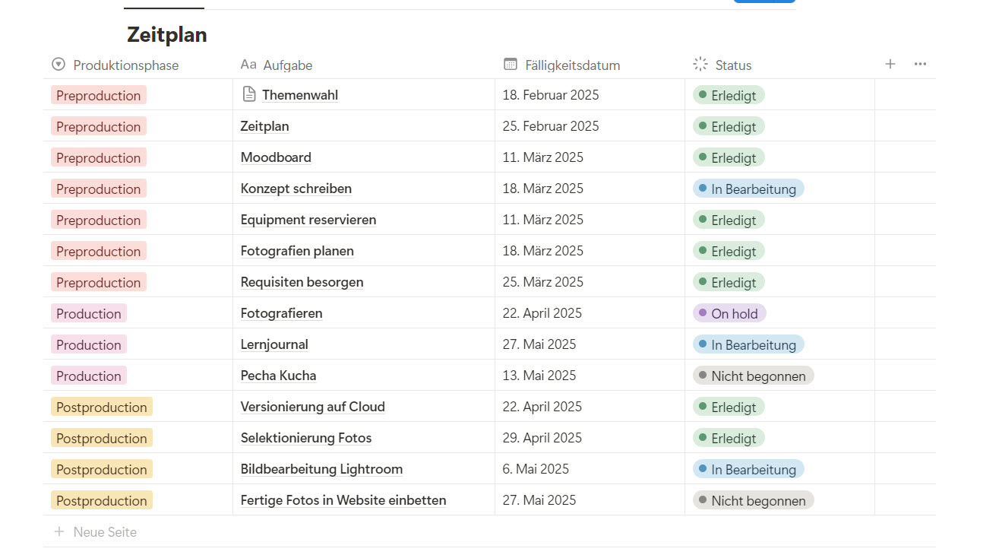
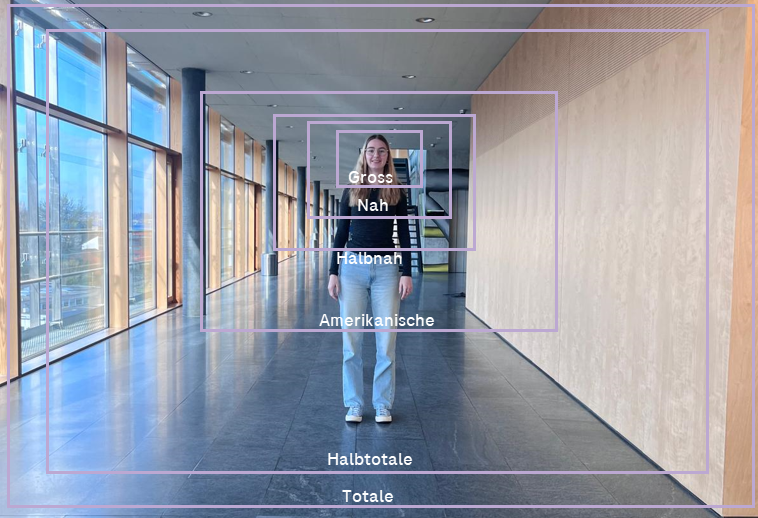
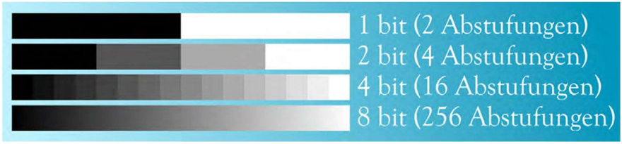

Lernjournal
14.01.2025
BildsensorDer Sensor ist das Herzstück jeder Digitalkamera. Er besteht in diesem Fall aus circa zwei Millionen Pixeln, die besonders lichtempfindlich sind. Jedes Pixel nimmt Licht auf und misst die Anteile der drei Grundfarben (Rot, Grün, Blau). Diese Farbinformationen werden vom Sensor an den Hauptprozessor weitergeleitet und in digitale Werte (0 und 1) umgewandelt. Anschliessend werden diese Daten auf der Speicherkarte gesichert.
Beim Betrachten des Bildes auf einem Bildschirm läuft dieser Prozess rückwärts: Die Daten werden vom Prozessor des Monitors gelesen und in elektrische Spannungen umgewandelt. Diese steuern wiederum die Pixel auf dem Monitor, die ebenfalls aus drei Subpixeln (RGB) bestehen. So entsteht auf dem Bildschirm das gespeicherte Bild.
Objektiv
Das Objektiv erfüllt mehrere wichtige Funktionen: Es bündelt das Licht, reguliert die Schärfe (Fokus), die Helligkeit (Blende) und den Bildausschnitt (Brennweite). Ohne Objektiv wäre die Kamera "blind", da das Licht gleichmässig auf den Sensor träfe es gäbe also kein scharfes Bild.
Durch bewegliche Linsen kann das Licht gezielt gebündelt werden je nachdem, ob der Fokus im Vorder- oder Hintergrund liegt. Dieser Vorgang wird Fokussieren genannt. Die im Objektiv eingebaute Blende steuert zusätzlich, wie viel Licht auf den Sensor fällt. Eine geöffnete Blende lässt mehr Licht durch, eine geschlossene weniger. So wird eine Über oder Unterbelichtung vermieden.
Objektive unterscheiden sich auch in ihrer Brennweite. Zoomobjektive haben eine variable Brennweite, während Festbrennweiten fix sind. Eine kurze Brennweite ermöglicht einen grossen Bildausschnitt (Weitwinkel), eine lange Brennweite einen kleinen (Teleobjektiv). Je nach Brennweite verändert sich auch die Tiefenschärfe.
Blende
Die Blende bestimmt, wie viel Licht auf den Sensor trifft. Sie wird mit f-Werten angegeben (z. B. f/1.8, f/4, f/22). Ein kleiner f-Wert bedeutet eine grosse Blendenöffnung (viel Licht), ein hoher f-Wert eine kleine Öffnung (wenig Licht). Jede Blendenstufe halbiert beziehungsweise verdoppelt die Lichtmenge.
Neben der Belichtung beeinflusst die Blende auch die Tiefenschärfe: Eine offene Blende (z. B. f/2) erzeugt einen unscharfen Hintergrund, eine geschlossene Blende (z. B. f/16) sorgt dafür, dass Vorder und Hintergrund scharf abgebildet werden.
Brennweite (Zoom)
Die Brennweite beschreibt den Abstand zwischen dem optischen Zentrum des Objektivs und dem Sensor. Sie beeinflusst den Bildausschnitt und die Bildwirkung.
- Normbrennweite (circa 50 mm): Entspricht etwa dem menschlichen Blickfeld.
- Weitwinkel (unter 50 mm): Grosser Bildausschnitt für Landschaften und Architektur.
- Teleobjektiv (über 50 mm): Kleiner Bildausschnitt, dafür grössere Abbildung des Motivs für Porträts oder entfernte Objekte.
Je länger die Brennweite, desto geringer die Tiefenschärfe. Weitwinkelobjektive zeigen meistens Vorder- und Hintergrund scharf, Teleobjektive eher nur den Fokusbereich.
Verschlusszeit / Shutter Speed
Die Verschlusszeit bestimmt, wie lange Licht auf den Sensor trifft. Kurze Verschlusszeiten "frieren" Bewegungen ein, lange Verschlusszeiten führen zu Bewegungsunschärfe.
ISO-Wert
Der ISO-Wert gibt an, wie lichtempfindlich der Sensor ist. Ein niedriger ISO-Wert (z. B. ISO 100) liefert die beste Bildqualität, benötigt aber viel Licht. Höhere Werte (z. B. ISO 1600) ermöglichen Aufnahmen bei wenig Licht, führen aber zu Bildrauschen vor allem in dunklen Bildbereichen. Die Faustregel: ISO so niedrig wie möglich, nur bei Bedarf erhöhen.
Belichtungsdreieck
Die Belichtung eines Bildes wird durch drei Faktoren bestimmt: Blende, Verschlusszeit und ISO-Wert. Diese drei beeinflussen sich gegenseitig verändert man einen Wert, muss mindestens einer der anderen angepasst werden, um die Belichtung konstant zu halten. Dieses Zusammenspiel nennt man Belichtungsdreieck.
Weissabgleich
Der Weissabgleich sorgt dafür, dass Farben natürlich wiedergegeben werden, unabhängig von der Lichtquelle. Licht hat eine Farbtemperatur (in Kelvin): Morgens oder bei Kerzenlicht wirkt es warm/orange, mittags oder bei bedecktem Himmel eher kühl/bläulich.
Die Kamera erkennt das dominierende Licht und passt die Farbwiedergabe an. Wird der Weissabgleich manuell "falsch" eingestellt, kann dies gezielt zur Bildgestaltung genutzt werden z. B. für wärmere oder kühlere Farbstimmungen.
Crop-Faktor
Der Crop-Faktor beschreibt, wie stark der Bildausschnitt einer Kamera vom Vollformat abweicht. Eine Kamera mit kleinerem Sensor (z. B. APS-C) "beschneidet" das Bild im Vergleich zum Vollformat. Dadurch wirkt es, als wäre die Brennweite länger.
Beispiel: Ein 50-mm-Objektiv mit einem Crop-Faktor von 1,5 wirkt wie ein 75-mm-Objektiv. Der Bildausschnitt wird kleiner, das Motiv erscheint näher. Der Crop-Faktor verändert jedoch nicht die Schärfentiefe, nur den Bildausschnitt.
21.01.2025
Heute habe ich den Unterschied vom manuellen Kameramodus zum automatischen Kameramodus kennengelernt. Mit Leo zusammen ging ich mit der Kamera Vergleichsfotos schiessen. Zuerst machten wir uns mit den Einstellungen vertraut, da die Einstellungen bei jeder Kamera an einem anderen Ort sind. Besonders das Einstellen der einzelnen Werte im manuellen Modus war nicht ganz einfach. Wir fotografierten im Anschluss zweimal das gleiche Objekt im manuellen sowie im automatischen Modus. Der Unterschied war gut zu erkennen, besonders in der Helligkeit.
28.01.2025
Am heutigen Tag hatten wir eine Vertiefung zum Thema Leuchten. Wir lernten verschiedene Lichtformer, Softboxen und Belichtungsvarianten (z.B. Dreipunktbelichtung) kennen. Ebenfalls konnten wir selber ein Belichtungs-Setup aufstellen, was sehr spannend war. Bei einer zusätzlichen Übung auf Campus mussten wir eine Beleuchtungsskizze machen. Dort definierten wir, woher das Licht jeweils kommt, anhand des Objektes. Dies war gar nicht so einfach, da man die Lichtquellen genau erkennen musste.
18.02.2025
In der heutigen Doppellektion konnte ich den Aufbau der Leuchte wiederholen und weiss nun auch, wie ich die Leuchte auf das Stativ setze. In der Gruppe fotografierten wir ein Objekt dreimal und veränderten jedes Mal die Kameraeinstellungen manuell. Ich lernte, dass die Tiefenschärfe mit der Blende verändert werden kann. Ebenfalls war es spannend zu sehen, dass mit der Leuchte ein deutlich besseres Foto entsteht, im Vergleich zu den anderen Gruppen, die mit anderen Lichtquellen arbeiteten. Ich habe zum ersten Mal mit der grösseren Kamera der Schule fotografiert und weiss nun, wo ich dort die Blende, den ISO-Wert und die Verschlusszeit einstellen kann.
25.02.2025
Heute nahmen wir die Nachbearbeitung genauer unter die Lupe. Im ÜK arbeitete ich mit Adobe Lightroom Classic und nutzte für die Übung im Unterricht die Möglichkeit, um Adobe Lightroom besser kennenzulernen. Im Programm konzentrierten wir uns auf Licht und Farbe und probierten diverses aus mit vorgegebenen Rohdateien. Nachdem ich nun mit beiden Programmen gearbeitet habe, kann ich sagen, dass ich Lightroom besser finde. Es ist intuitiver aufgebaut und das Layout passt mir besser. Ich habe gelernt, dass mit der Nachbearbeitung noch sehr viel verändert werden kann. Mit Filtern, Effekten oder Retuschieren der Fotos können diese optimiert und nach meinen Wünschen verändert werden. Zuletzt lernten wir noch verschiedene Rohdatenformate kennen. Je nach Kamera haben die Fotos einen anderen Formatnamen.
Beispiele:
- Sony: .ARW
- Canon: .CR2 / .CR3
- Fujifilm: .RAF
- Leica: .DNG
- Nikon: .NEF
11.03.2025
Wir bekamen zum Start eine Einführung zum Einblickstag, welcher in zwei Wochen stattfindet. Zur Vorbereitung konnten wir ein Filmplakat gestalten. Hierbei konnte ich das Einstellen der Kamera üben. Ich hatte zum Start etwas Mühe mit dem Licht. Julia und ich suchten deshalb einen Ort mit mehr Tageslicht. Daraufhin wurde das Bild in Photoshop hochgeladen und zu einem Filmplakat bearbeitet. Mit Photoshop habe ich noch nicht so oft gearbeitet. Ich lernte, wie ich eine Maske erstellen kann, mit dem Entfernen-Tool Objekte vom Hintergrund entferne und mit dem generativen Füllen Muster weiterführen kann. Zum Schluss habe ich mein Porträt in die Ebene vor das Plakat gesetzt, um mich mehr oder weniger realistisch zu platzieren.
18.03.2025
In der ersten Lektion hatten wir die Prüfung über die Grundlagen der Fotografie. In der zweiten konnten wir dann noch an unserem Konzept, Zeitplan und Moodboard arbeiten. Den Zeitplan hatte ich bisher in einer sehr simplen Tabelle. Ich fand dies jedoch nicht übersichtlich genug und wechselte auf eine Tabelle, die ich mit genaueren Arbeitsschritten ausfüllen kann. Ebenfalls kann ich den aktuellen Status (Erledigt, in Bearbeitung,…), das Fälligkeitsdatum (Meilenstein) und die Produktionsphase eintragen. Diese Tabelle habe ich dann mit einer Zeitleiste verknüpft und habe so einen sehr guten Überblick über Aufgaben und Meilensteine.
25.03.2025
In der ersten Lektion vertieften wir das Thema Licht. Ich lernte, dass es verschiedene Theorien zum Licht gibt. Einige Theorien besagen, dass Licht in Wellen vorkommt. Hingegen das Licht in anderen Theorien als Teilchen existiert. Ebenso gingen wir der Frage auf die Spur “Warum kann ich um die Ecken hören, aber nicht sehen?”. Dies lässt sich so erklären: Schallwellen sind im Vergleich zu Lichtwellen (elektromagnetische Wellen) deutlich grösser. Sie können sich so um Gegenstände herum im Raum ausbreiten und sich verteilen. Lichtwellen sind hingegen viel kleiner und somit ist auch der Abstand zwischen den Wellen kleiner. Dies führt dazu, dass sich die Lichtwellen nicht um die Ecke verbreiten können. Sie sind im Grössenverhältnis zu klein.
27.03.2025
Heute startete ich mit dem Fotografieren. Eigentlich war die Session eine Woche später geplant, jedoch war das Wetter gerade optimal und ich hatte genügend Zeit. Das Foto am Bahnhof stand heute auf der Liste. Das Material, mein Model und die Umgabung haben super gepasst. Wir konnten ganz aussen am Perron shooten und hatten keinerlei Probleme. Als ich nach dem Shooten alle Fotos auf die Cloud ziehen wollte, bemerkte ich, dass ich vergass RAW in der Kamera einzustellen. Dies ärgerte mich sehr. Ich wusste, dass ich die Bilder erneut machen muss und konnte zum Glück auch mein Model, Medes, motovieren, noch einmal zu gehen. Dies war ein grosses Learning für mich und denke, dass es mir so schell nicht mehr passieren wird.
1.04.2025
In der ersten Lektion lernten wir die Bildkompositionen kennen. Dies sind die Einstellungsgrössen in der Fotografie und werden eingesetzt, um ein Foto bewusst zu gestalten. Je nach Einstellungsgrösse kann die Wirkung des Bildes bewusst beeinflusst werden. Einige Begriffe waren mir schon bekannt, da wir dies im ÜK schon hatten. Trotzdem ist vieles schon wieder in Vergessenheit geraten. Was zudem neu war für mich, war die Detail-Aufnahme. Sie stellt Objekte mit einem engen und kleinen Bildausschnitt dar, um Details in den Fokus zu bringen. Mit dieser Komposition können Spannung und Emotionen erzeugt werden. Ebenfalls neu für mich war die Supertotale. Bei dieser Einstellungsgrösse ist die Umgebung zentral und dominierend. Es wird ein Gesamtüberblick über die Szene verschafft und Personen werden klein dargestellt.
8.04.2025
Zum Start der Lektion gab uns Rémy einige Tipps mit, die uns beim Fotografieren helfen können:
- Zeit nehmen
- Probefotos machen
- Technische Grundlagen nutzen (mit manuellen Einstellungen arbeiten)
- Referenzfotos im Internet suchen, eine klare Vorstellung des Fotos haben
- Tiefenunschärfe nutzen (Bokeh-Effekt)
- Zusätzliche Elemente nutzen
- Framing/Positionierung (bewusst einsetzen)
- ND-Filter nutzen (Sonnenbrille für Linse, besonders bei sonnigen Tagen)
- Mist-Filter
- Lichtverhältnisse beachten (Woher kommt das Licht? Wie hell ist es?)
Im Verlauf der Lektion lernte ich zudem das diagonale Framing kennen. Hierbei werden Linien und Strukturen diagonal positioniert. So kann Dynamik und Bewegung erzeugt werden.
29.04.2025
BittiefeDie Bittiefe gibt an, wie viele Abstufungen pro Farb- oder Tonwert gespeichert werden können. In der Bildverarbeitung bestimmt sie, wie fein Farbübergänge dargestellt werden.
 KomprimierungDas originale Bild hat eine Bittiefe von 8 Bits (Standard). Nach dem Komprimieren ist die Bittiefe tiefer. Im Vergleich zum obigen Schema wird sie zwischen 4 und 7 Bit liegen. Dies ist anhand der Gesamtschärfe des Bildes zu erkennen. Ebenfalls ist am Himmel eine Farbabstufung ersichtlich.
Vorher: 14.1 MB
Nachher: 530 KB
Vor- und Nachteile der Komprimierung
Vorteile
- Weniger Speicherplatz nötig
- Schnelleres Hoch- und Herunterladen
- Schnellere Ladezeit auf Websites
Nachteile
- Qualitätsverlust
- Kompatibilitätsprobleme (komische Komprimierungsformate)
- Wiederholtes Speichern verschlechtert die Qualität
6.05.2025
In der heutigen Lektion vertieften wir die Bildformate JPEG, RAW, TIFF, PNG und HEIC. Die wichtigsten Informationen fasste ich zusammen. Vieles war mir schon bekannt, jedoch lernte ich auch einige Fakten dazu.
- Eine RAW-Datei ist kein direkt sichtbares Bild, sondern enthält nur Rohdaten vom Kamerasensor. Es braucht spezielle Softwares (z. B. Lightroom oder Photoshop), um daraus ein sichtbares Bild zu entwickeln.
- Das HEIC-Format, das z.B. iPhones verwenden, komprimiert Bilder effizienter als JPEG und dies ohne sichtbaren Qualitätsverlust. Dadurch passt auf ein Handy doppelt so viel Bildmaterial.
- Eine TIFF-Datei kann wie ein kleines Bild-„PDF“ funktionieren. Es hat mehrere Seiten oder Ebenen. Das wird oft in der Druckvorstufe oder Archivierung verwendet.
20.05.2025
Rund um das Thema Urheberrecht ging es in der heutigen Doppelstunde. Urheberrecht ist für den Schutz von kreativen Werken. Dazu zählen Fotos, Texte, Musik und Videos. Diese Werke gehören immer an dieser Person, die das Werk erstellt/geschaffen hat. Diese Person darf dem zu folge auch entscheiden, ob es veröffentlicht wird und ob man es bearbeiten und weiterverwenden darf oder nicht.
Rechte als Urheber:in
- Über die Veröffentlichung ihres Werks zu bestimmen
- Namentlich genannt zu werden
- Bearbeitungen verbieten
- Eine Vergütung für die Nutzung zu verlangen
Nutzungsrechte und Lizenzen
Falls eine Person das Werk von jemand anderem nutzen möchte, braucht es eine Erlaubnis des/der des/Urheber:in. Eine bekannte Möglichkeit ist die Nutzung von Creative Commons (CC). Hiermit kann der Künstler die Nutzung definieren. Die Lizenzen können divers und nach Wunsch kombiniert werden:
- CC0 (Zero): Das Werk ist gemeinfrei. Es darf ohne Einschränkung kopiert, verändert, verbreitet und genutzt werden.
- BY (Namensnennung): Das Werk darf genutzt werden, aber der Name des Urhebers muss genannt werden.
- NC (Non-Commercial): Das Werk darf nicht für kommerzielle Zwecke genutzt werden.
- ND (No Derivatives): Das Werk darf nicht bearbeitet oder verändert werden.
- SA (Share Alike): Abgeleitete Werke müssen unter derselben Lizenz weitergegeben werden wie das Original.
Urheberrechtsverletzung
Ohne entsprechende Erlaubnis liegt eine Urheberrechtsverletzung vor. Diese kann rechtliche Folgen haben (Abmahnung, Geldstrafe, Löschung des Inhalts)
Datenschutz und Recht am eigenen Bild
Auch als Person hinter der Kamera muss beachtete werden, dass falls eine Person abgebildet wird, diese damit einverstanden ist. Sie hat das Recht am eigenen Bild. In diesen Fällen ist eine Einwilligung nötig:
- Bei erkennbaren Einzelpersonen: Ja
- Bei Gruppenbildern: Ja, wenn Gesichter deutlich zu erkennen sind
- Bei Veranstaltungen: Meistens ja
- Bei Kindern: Zustimmung der Eltern erforderlich
Die Einwilligung kann mündlich oder schriftlich erfolgen. Die schriftliche Variante ist jedoch sicherer.